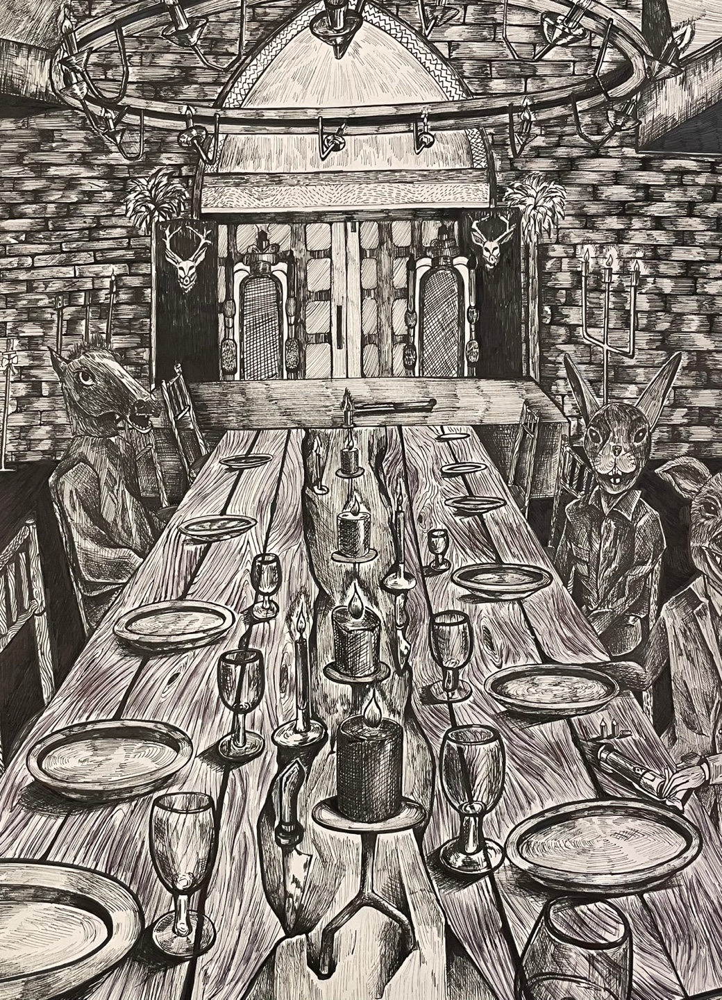

<!DOCTYPE html>
<html>
<head>
    <meta charset="UTF-8">
    <meta http-equiv="X-UA-Compatible" content="IE=edge">
    <meta name="viewport" content="width=device-width, initial-scale=1.0">
   
    <title>Document</title>
    <style>
      /* 화면 검정색 배경 설정 */
      body {
        background-color: black;
        margin: 0;
        padding: 0;
      }

      .container {
        display: flex;
        align-items: center;
        justify-content: center;
      }
      
      .text-container {
        color: white;
        text-align: left;
        margin-left: 20px;
        flex: 1;
      }

      img {
        max-width: 100%;
        height: auto;
        margin: 0 15px;
        opacity: 0;
        animation: fade-in 2s ease-in-out forwards;
      }

      @media screen and (max-width: 768px) {
        .container {
          flex-direction: column;
          align-items: flex-start;
        }

        .text-container {
          margin-top: 20px;
          margin-left: 0;
        }
      }

      @keyframes typing {
        from { width: 0; }
        to { width: 100%; }
      }

      @keyframes fade-in {
        from { opacity: 0; }
        to { opacity: 1; }
      }

      @media screen and (max-width: 480px) {
        .text-container {
          font-size: 18px;
        }
      }

      /* 타이핑 효과 애니메이션 */
      .typing-animation {
        overflow: hidden;
        white-space: nowrap;
        animation: typing 3s steps(40, end);
      }
      .button {
    bottom: 40px; /* 화면 하단으로 10px 위치에 배치 */
    right: 40px; /* 화면 오른쪽으로 10px 위치에 배치 */
    padding: 10px 20px;
    background-color: #000000; /* 검정색 배경색 */
    color: #ffffff; /* 흰색 글자색 */
    border-radius: 10px; /* 10px 모서리 */
    text-align: center;
    text-decoration: none;
    transition: background-color 0.3s ease-in-out; /* 배경색 변화에 애니메이션 효과 추가 */
  }
  
  .button:hover {
    background-color: #333333; /* 버튼에 호버(hover) 효과가 적용될 때의 배경색 */
  }
  
  .button:active {
    background-color: #111111; /* 버튼을 클릭할 때의 배경색 */
  }
    </style>
</head>
<body>  
    
</body>
</html>
<body>
    <a href="Q&A.html"><button class="button">Back</button></a>
    <nav class="navbar">
         <div class="navbar__logo">
           <i class="fab fa-accusoft"></i>
           <a href="Art Book"></a>
         </div>
 </ul>
        <div style="text-align: center;">
            <h1 class="video-title">dwdwjdwjd</h1>
            <div class="container">
                <div style="margin: 0 60px;">
                  
                </div>
          
                <div class="text-container">
                  <h1 class="typing-animation">꿈 - Dream</h1>
                  <p class="typing-animation">매번 잠에서 이상하고 괴상한 꿈을 꾸기 시작한다.</p>
                  <p class="typing-animation">얼굴은 동물에 몸은 사람 몸인 생명체들과 온통 흑백으로 보이는 풍경과 어딘지 모르는 공간</p>
                  <p class="typing-animation">모든것이 기괴하지만 그 안에서 나는 아무렇지도 않게 받아드리고 흘러가는 시계소리를 들으며 그들과 밥을 먹는 나</p>
                  <p class="typing-animation">그들과 함께 있는 공간에는 서로 어긋나 동떨어져있는 이질감과 섬득함의 공간
          
         
            </div>
        </div>
</body>
</html>
